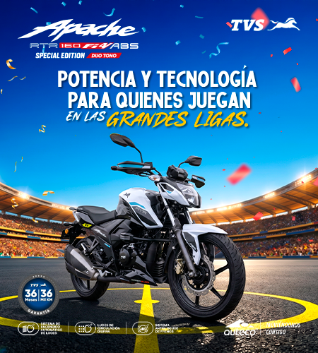
10 AGO 2026
Las 5 motos más vendidas de Colombia en 2026
Análisis del mercado motero colombiano: qué modelos lideran las ventas y por qué.
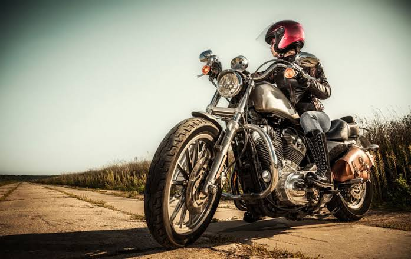
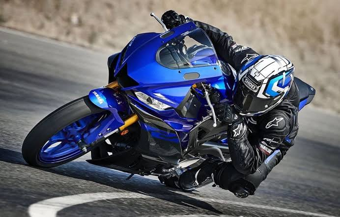
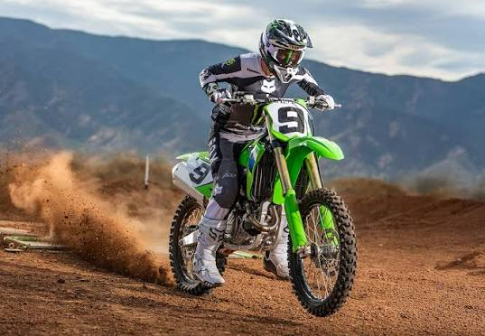
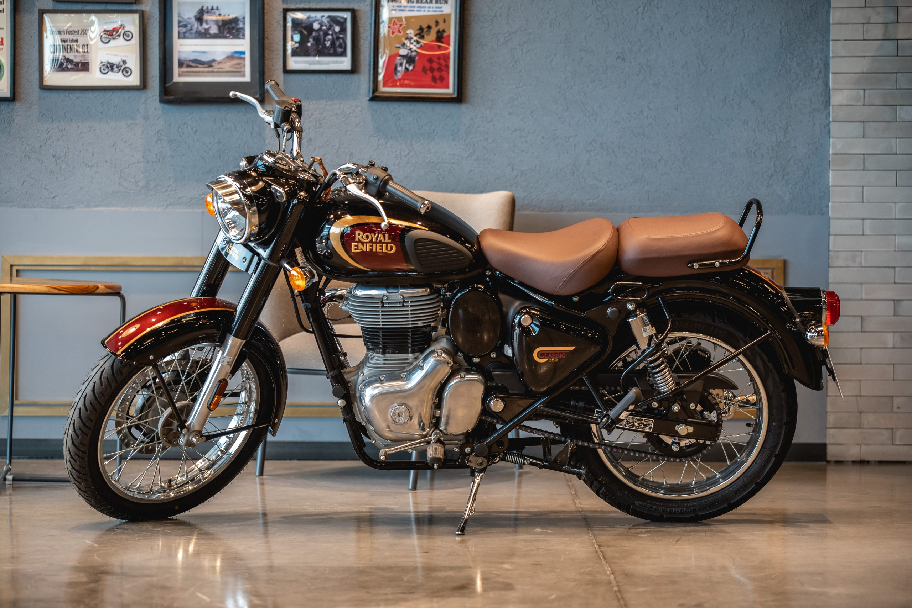
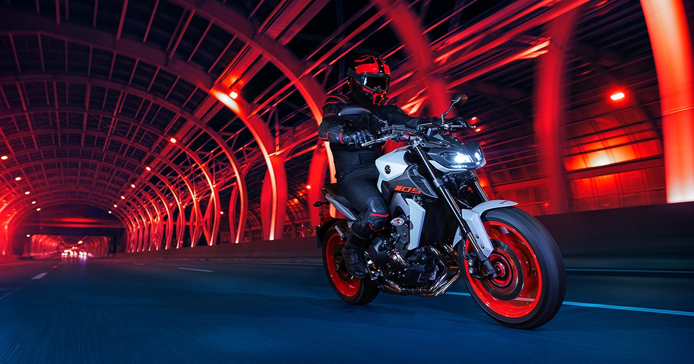
Motos, repuestos, accesorios y seguridad vial. Todo en un solo lugar, enviado a tu puerta.
Explorar catálogo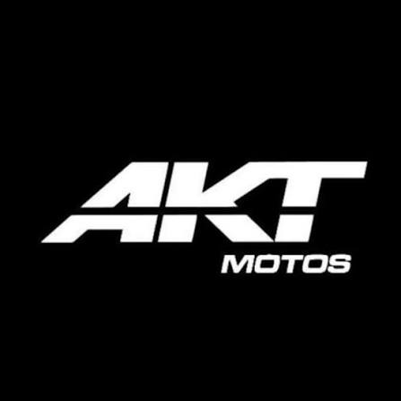
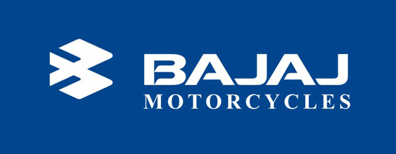
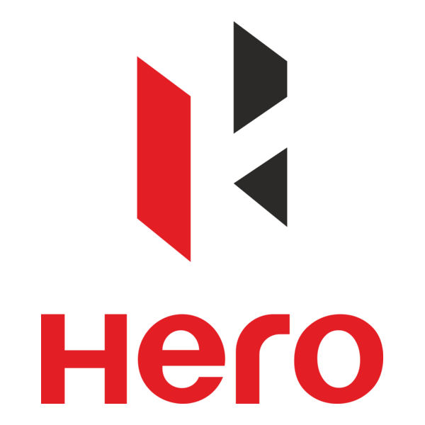
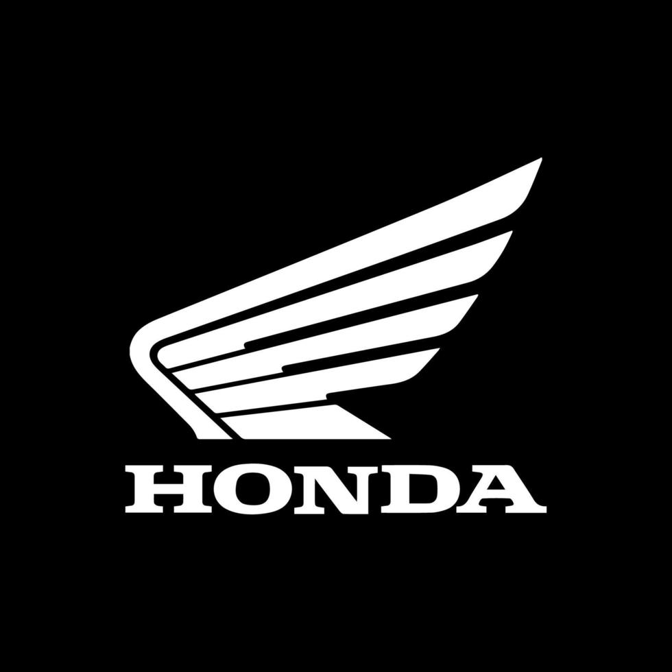
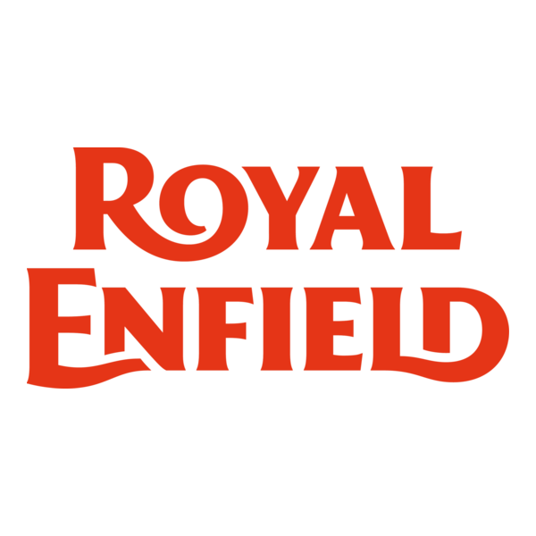
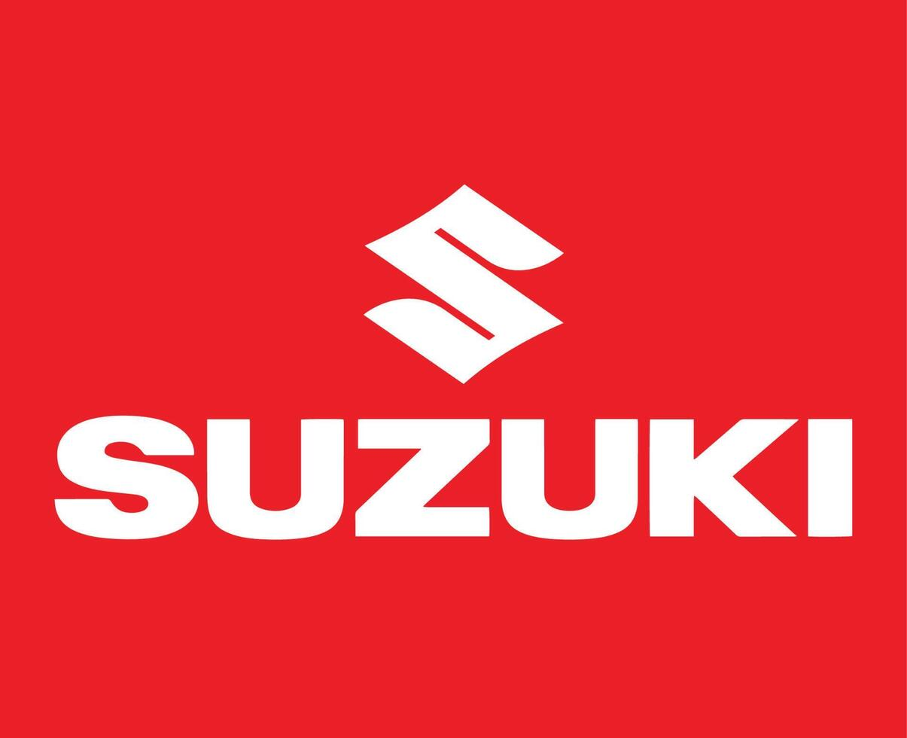
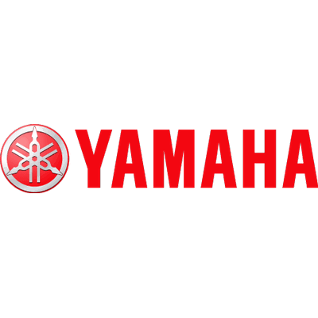

Análisis del mercado motero colombiano: qué modelos lideran las ventas y por qué.
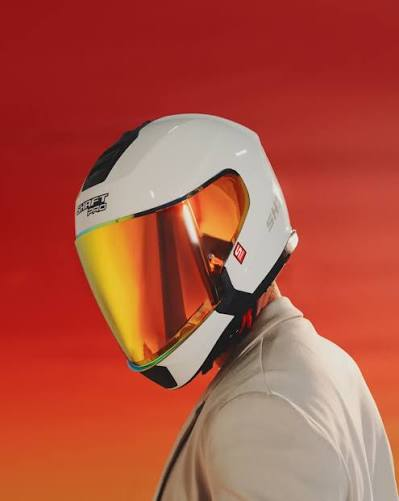
Certificaciones, tipos de casco y qué tener en cuenta antes de comprar.
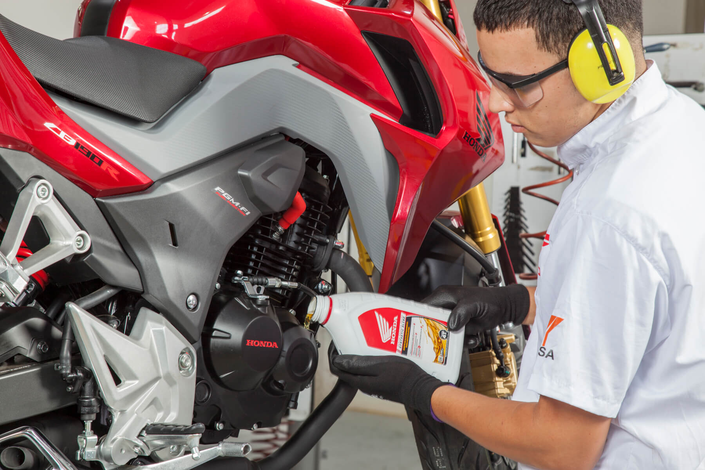
Revisá estos 8 puntos cada mes y mantené tu moto en óptimas condiciones.
Somos una tienda 100% online de motos, repuestos y accesorios. Nos mueve una idea simple: que rodar sea seguro, accesible y con estilo. Enviamos a todo Colombia, con atención cercana y precios justos.
Conoce más